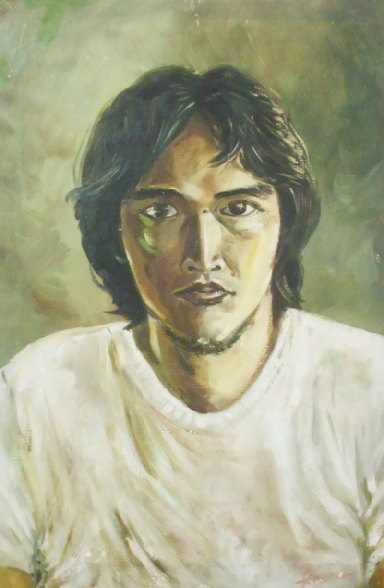

Tentang Pelukis
Salah satu pelukis yang berdomisili di Medan. Lahir di Medan Tahun 1951. Memiliki bakat dari kecil dalam bidang melukis. Tamat dari SMA melanjutkan kuliah di ASRI (Akademi Seni Rupa Indonesia) Yogyakarta yang sekarang berganti nama menjadi ISI (Institut Seni Indonesia) dan lulus tahun 1979. Semasa setelah lulus kuliah aktif dalam pameran lukisan di beberapa kota di Indonesia dan Malaysia seperti Yogya, Bandung, Medan, Jakarta, dan Taiping Negeri Perak Malaysia. Dan bergabung di Sanggar Simpassri (Simpaian Seniman Seni Rupa Indonesia) Sumatera Utara.

Karya lukisnya sebagian besar mengangkat tema-tema alam. Dengan banyaknya melihat objek keindahan alam Indonesia menimbulkan inspirasi untuk memindahkannya ke kanvas lukisan. Sampai dengan saat ini ia sudah menuangkan inspirasi dan karya lukisnya kurang lebih 100 buah lukisan.
Karya lukisnya dibuat umumnya dengan menggunakan cat minyak. Disamping itu ada juga membuat karya seni grafis dengan kertas dan tinta dengan tema abstrak. Ia dikenal sebagai pelukis yang beraliran natural seperti pelukis Dullah, Basuki Abdullah dan Wakidi.